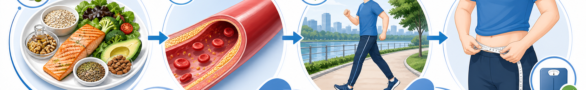

한눈에 보는 운동 처방 핵심 수치
주당 유산소 운동
150~300
분/주 (중강도 기준)
주당 저항 운동
2+
회/주 (대근육 8~10종목)
운동 LDL 감소
−10~15
% (식이 효과에 추가)
허리둘레 목표
<90/85
cm (남/여)
운동 강도 구간 — 심박수(HR) & 자각도(Borg) (220-나이 × %)
강도 분류
최대심박 %
Borg (6~20)
50세 환자 예시
저강도 (Light) — 워밍업·회복
40~55%
9~11 (매우 가벼움)
68~94 bpm
중강도 (Moderate) — 처방 표준
60~70%
12~13 (다소 힘듦)
102~119 bpm
중-고강도 (Vigorous) — 단축 처방
70~85%
14~16 (힘듦)
119~145 bpm
고강도 (High) — HIIT 단기
85% 이상
17~19 (매우 힘듦)
145+ bpm
운동 종목 처방 (Aerobic & Resistance)
유산소 운동 (Aerobic) · 주 5회 30분
- 1. 빠른 걷기 — 1분 100~110걸음, 시속 5~6km
- 2. 자전거 — 평지 20~25km/h, 무릎 부담 적음
- 3. 수영·아쿠아로빅 — 관절염·비만 환자 1순위
- 4. 가벼운 조깅·등산 — 시속 7~8km, 대화 가능
- 5. 권장 강도 — "약간 숨차나 대화는 가능"
저항 운동 (Resistance) · 주 2~3회
- 1. 대근육 8~10종목 — 가슴·등·다리·어깨·복부
- 2. 세트·횟수 — 2~3 set × 10~15회 (1RM 60~70%)
- 3. 휴식 — 세트 사이 60~90초, 종목 사이 2분
- 4. HDL 상승 효과 — 12주 시 약 4~6% 증가
- 5. 주의 — 발살바(숨참기) 금지, 혈압 급상승
식이 핵심 3룰 · DIET RECAP
1. 포화지방 6% 미만 — 삼겹살·버터·치즈를 올리브유·들기름으로 대체. 트랜스지방은 0g 표기여도 0.2g까지 함유.
2. 수용성 섬유 10~25g/일 + 오메가-3 — 귀리·보리·콩으로 섬유, 주 2~3회 등푸른 생선으로 오메가-3 보충.
3. 알코올·당분 절제 — 술은 TG를 1~2시간 내 30% 급상승. 자세한 식이는 "이상지질혈증 식이요법 가이드" 참조.
2. 수용성 섬유 10~25g/일 + 오메가-3 — 귀리·보리·콩으로 섬유, 주 2~3회 등푸른 생선으로 오메가-3 보충.
3. 알코올·당분 절제 — 술은 TG를 1~2시간 내 30% 급상승. 자세한 식이는 "이상지질혈증 식이요법 가이드" 참조.